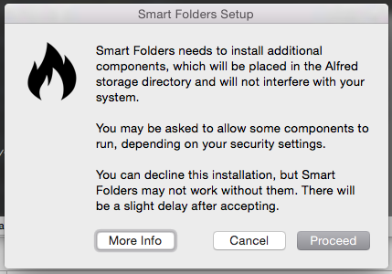

There are a few things to note about implementing the Bundler.
Upon installation, the Bundler will ask the user for permission to install.
If the user presses the More Info button, the script will be
killed, and the explanation page will be opened
in a browser. If the user presses Cancel, then the Bundler will
throw an exception (AppleScript, PHP,
Python, and Ruby) or will trigger an error
(Bash).
It is advised that you catch the exception so that you can either
(1) proceed without the Bundler, or (2) kill the script and notify the user
that the workflow will not work without the Bundler installed. If you are using
the Bash Bundler, then you should
trap the error, which returns the error code 23.
The error codes 21 and 22 indicate other installation
failures, respectively: (21) no Internet connection and
(22) corrupted installation file.
INSERT CODE HERE FOR THE EXCEPTIONINSERT CODE HERE FOR THE TRAPrequire_once( 'alfred.bundler.php' );
try {
// Initialize the bundler object, which will install the bundler
// if necessary.
$b = new AlfredBundler( [ 'wf_log' => TRUE ] );
} catch (Exception $e) {
// Do error handling here.
// Maybe set a global variable that indicates the bundler wasn't
// installed and try to continue.
$GLOBALS[ 'bundler' ] = FALSE;
// Or maybe send something to the console and exit.
file_put_contents( 'php://stderr',
'Cannot continue without the Alfred Bundler installed.' );
die();
}
// Continue with the code.INSERT CODE HERE TO CATCH THE EXCEPTIONrequire_relative 'alfred.bundler.rb'
begin
b = Alfred::Bundler.new
rescue Alfred::BundlerInstallError
# Do error handling here.
# Maybe set a global variable that indicates the bundler wasn't
# installed and try to continue.
ENV['bundler'] = false
# Or maybe send something to the console and exit.
abort("Cannot continue without the Alfred Bundler installed.")
end
# Continue with the code.
An example AppleScript confirmation dialog.
Notice the workflow icon (just a testing icon) and the workflow name appearing in the dialog.
Obviously, the Bundler requires an Internet connection to download and install any needed assets. In light of this, there are two main approaches exist for implementation.
Lazy Loading calls assets only just before they are needed and not sooner. The lazy pattern allows for a more performant script; instead of a long load time at first run (because of downloading assets), the script will distribute the download times across its execution. However, there is the possibility that the user will not have an Internet connection when the asset is called, which will make the script run slower (as it waits for timeouts) and might not load key assets for the workflow to run.
Eager loading is the opposite of Lazy Loading in that it loads all of the assets immediately upon execution. These assets might not be used (depending on the conditional logic of the script), which will slow the script. Also, the first run of the script will take longer as it needs to download more. After the first run, however, the aspects of the workflow that rely on the Bundler will not need an Internet connection.
If your workflow requires an Internet connection to function (i.e. interacting with a remote API), then you should implement a Lazy Loading pattern. Conversely, if your script is meant to function completely offline, you should use the Eager Loading pattern.
Post on the Alfred Forum thread.
Open an issue in the Github queue.